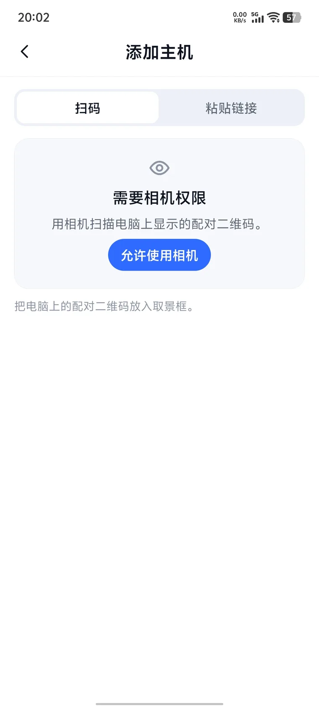
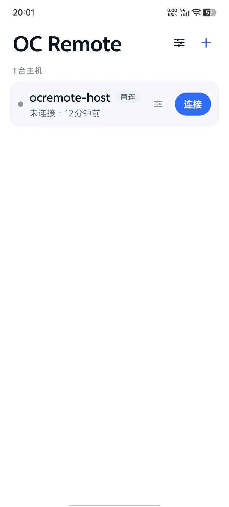
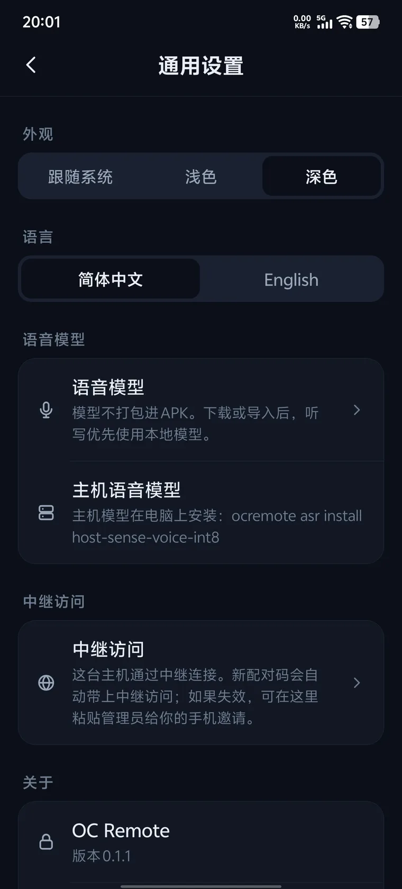

会话，不用缩小桌面。
流式文字、思考过程、工具调用和排队输入都保留。需要时再打开底部面板，换 Agent、模型、MCP 或 Skill。
- 实时流式输出，长内容自动折叠
- 运行中继续输入，结束后自动发送
- Agent、模型和思考深度就在会话底部

OPENCODE REMOTE · ANDROID
电脑上的会话继续跑，手机随时接手。读流式输出，换 Agent 和模型，跑斜杠命令， 审阅文件、写行内评论，或者直接用语音说。
$ ocremote status listen 0.0.0.0:8797 direct ws://192.168.1.42:8797 relay off opencode 127.0.0.1:49374 (2.3.0) clients 0 uptime 2h 14m

01 / 会话体验
手机端保留了会话的节奏：流式文字、思考过程、工具调用、排队输入和运行状态。 需要的时候，再展开 Agent、模型、MCP、Skill 和听写设置。
流式文字、思考过程、工具调用和排队输入都保留。需要时再打开底部面板，换 Agent、模型、MCP 或 Skill。
对齐 opencode TUI。终端专属命令直接置灰，不在手机上假装可用。
/models切换模型/agents切换 Agent/skills附加到下一次发送/status查看会话状态/help查看全部命令/terminal手机端不支持浏览项目文件、切换换行、选中行区间写评论。评论会合成一条 review prompt 发回当前会话。

其他终端切了 Agent 或模型，手机不切页就更新；手机改了设置，服务端事件也会带给其他客户端。
session.agent.selectedbuild → plansession.model.selectedDeepSeek V4.1 Flashsession.deleted回到空会话页mcp.status.changed面板自动刷新02 / 三端接力
主机端负责连接本机 opencode，手机端负责操作会话，中继端只负责把加密帧送到更远的网络。 三端可以分开部署，也可以只走局域网直连。
和 opencode 一起运行，保留本机密码。
$ ocremote status listen 0.0.0.0:8787 direct ws://192.168.1.42:8787/ws relay off opencode 127.0.0.1:49374 (2.3.0) clients 0 uptime 2h 14m
扫码或粘贴配对链接，指纹核对后连接。

可选。只转发密文，适合手机和电脑不在同一网络。
$ ocremote-relay admin status
{
"relayId": "relay_4d5b8c0…",
"wsUrl": "wss://relay.example/ws",
"v": 2,
"hosts": 0,
"clients": 0,
"rooms": []
}
03 / 安全模型
opencode 继续只监听 127.0.0.1。手机与主机之间使用 Noise NK；中继看到的是房间、身份和时间元数据，应用数据只有密文。
主机生成短时配对码，手机核对主机指纹后获得设备令牌；主机只保存令牌哈希。
X25519 临时密钥、ChaCha20-Poly1305、SHA-256；控制帧和 HTTP/SSE 负载都在受保护记录内。
Release APK 只使用 Android 系统 CA 库；QA APK 才额外信任开发测试 CA，二者分开构建。
04 / 界面
浅色、深色、侧边栏、审阅和 Diff 都是 Android 客户端的实际页面。状态栏里的主机名和会话内容来自一次性测试环境。





05 / 下载
下载 0.1.1，安装与设备架构匹配的 APK。主机端自带 Bun 和 sherpa-onnx；中继端是静态二进制。
打开最新 Release ↗当前 APK 使用 Expo debug keystore 签名，正式分发前需要替换生产 keystore。Release APK 不包含 QA 测试 CA。